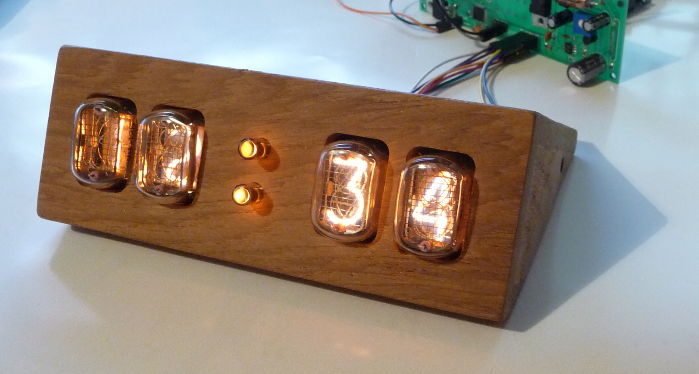
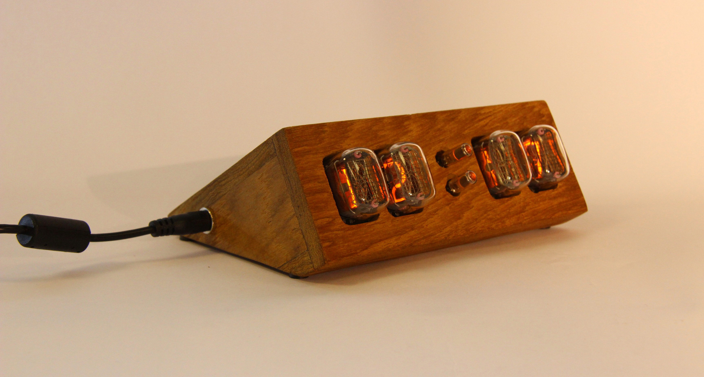

obsolete;time nixie clock
obsolete;time is a desk clock using Nixie tubes as digital indicator. We are tackling the challenge that is designing and building a product ready for production! Here are some design choices:
| 1 | IN-12 Russian Nixie Tubes |
| 2 | Minimalistic |
| 3 | Made of Premium materials |
| 4 | No buttons petruding |
| 5 | Smartphone APP and BLE |
Prototype build


BOM
Hardware is made up of multiple sub-systems listed bellow, each in charge of an important function
| 1 | ATmega 328 μController | The micro-controller runs tho software controlling the clock |
| 2 | DS1307 RTC | The real time clock is in charge of keeping correct time, even when power loss |
| 3 | IN-12 Russian Nixie tubes | Nixie tube indicator manifactured in the 60s |
| 4 | Bluetooth module | Wireless gateway to give instructions to the clock |
| 5 | High voltage generator | Nixie tube require ~170v to operate, as such a separate power supply is needed |
PCB and layout
Case